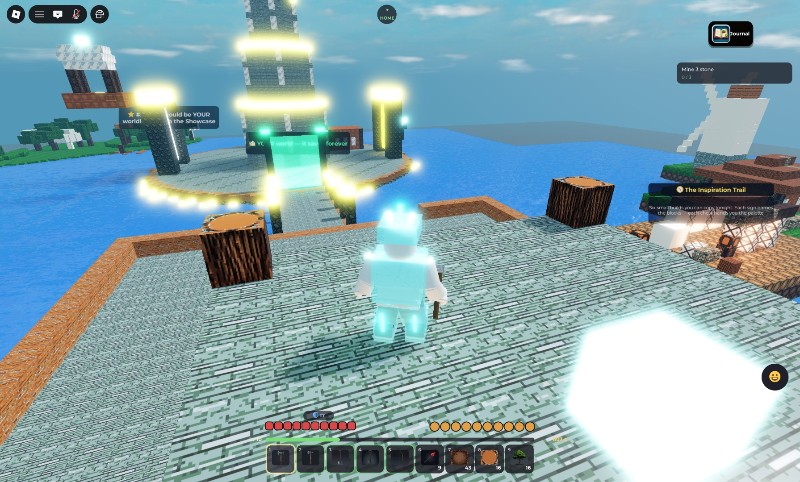
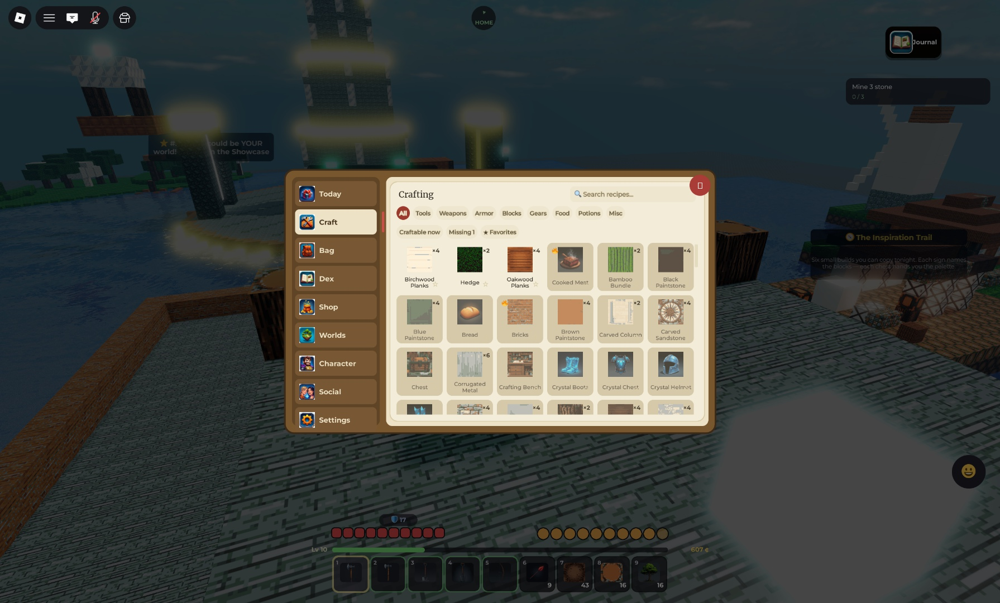
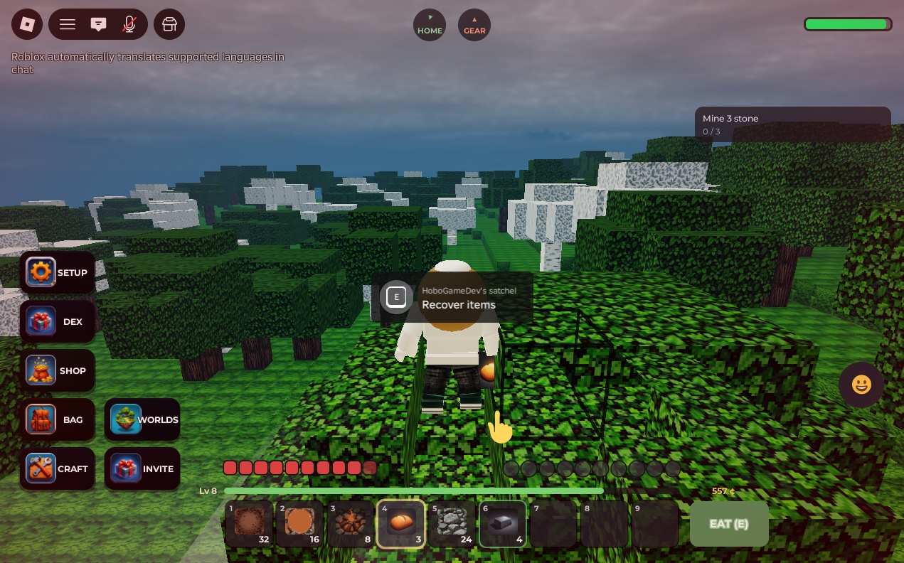
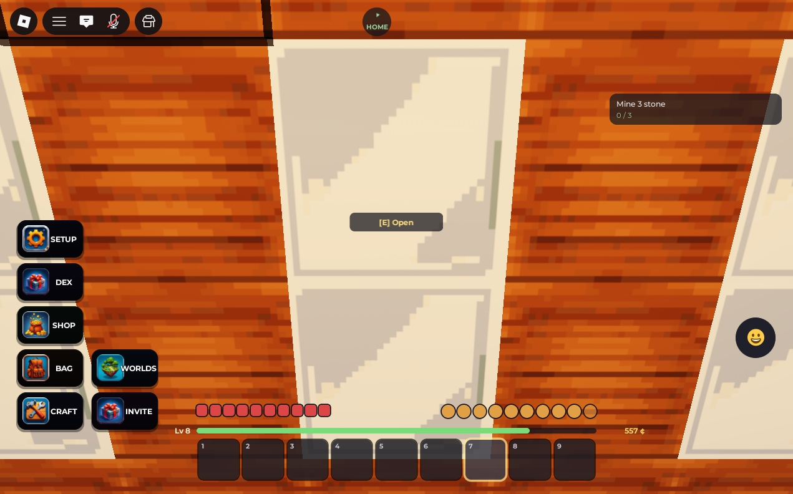
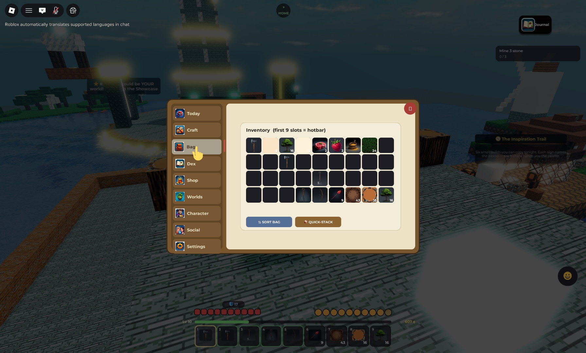
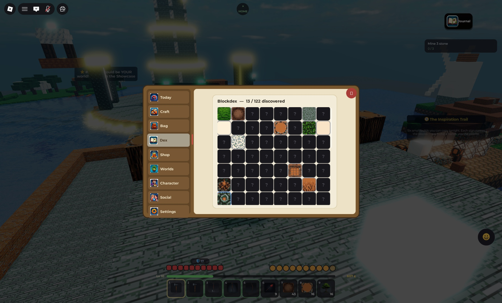

You wake in the Undercroft. Walk toward the light.
Goal: be safe when the sun sets. One full day-night cycle lasts 20 real minutes. Night is dangerous.

Your screen: quest tracker (top right), the Journal book (top right — everything lives in it), hotbar + hearts + hunger (bottom).
Walk out of the tunnel. That glowing tower is the Worldbeacon — it marks spawn. You can always find home by it.
Check the top-right corner. That is your quest. It will walk you through your first tools step by step.
Find a tree. Hold left-click (or hold your finger) on the trunk until it breaks. Collect 5 wood.
Open the Journal (top-right, or press J) → Craft. Search or pick a category, tap Oakwood Planks, then craft a Crafting Bench. Each recipe card shows exactly what it needs — green when you have it, a how-to-get hint when you don't:

The Craft page: category chips + search + Craftable-now filter, and a card per recipe with ingredients and one-tap craft.
Place the bench: select it in your hotbar, then right-click the ground (or tap PLACE). A ghost outline shows exactly where it will go:

Hold a block and aim — the ghost outline marks the landing spot.
Press E on your bench and craft better tools as the quest asks: stone pickaxe → coal → torches.
Before dark: place torches (they burn bright and scare nothing — but you can SEE), or dig into a hillside and seal the door.
Hungry? Hold food and press E (or tap EAT).
⚠️
At night, Glooms, Skitters and Duskwings hunt. Click a creature to fight back — or run for the light.
💡
Died? Your items are safe in a satchel where you fell. Follow the orange GEAR arrow at the top of your screen to get everything back.
Goal: iron gear, a farm, and a chest full of loot.
Mine down. Ores live deep: coal near the surface, then iron, then gold, ruby and crystal near the bottom. Watch for glowing magma on deep cave floors — it burns!
Smelt: craft a Smelter, hold raw ore and press E on it. Iron unlocks the whole mid-game.
Farm: craft a hoe, press E on grass to till it, plant seeds, wait for golden wheat (~2 minutes through 4 stages), harvest with E.
Trees: plant a sapling on dirt or grass. A real oak grows in 4 minutes.
Storage: craft a Chest (8 planks). Walk up and press E when the prompt appears:

Stations and chests show an [E] prompt when you are close enough. Use QUICK-STACK in your bag to pour matching items in:

Your bag: first 9 slots are the hotbar. SORT BAG tidies; QUICK-STACK feeds nearby chests.
Armor: hides from Woollys and Porkos craft into hide armor; iron comes next. Hold a piece and press E to equip.
Rain happens. Deserts stay dry, snow biomes get snowfall. Weather passes in a few minutes.
Swim carefully: watch the bubbles when your head goes under — surface before they run out.
💡
Full bag while strip-mining? Turn on Junk → coins in Settings: extra dirt and cobble convert to coins instead of being lost.
Invite friends with the INVITE button — friends can visit, and you can grant build rights (co-builders help quests too).
Set your respawn anywhere: Settings → SET HOME HERE.
Outgrown it? ASCEND preserves your world as a visitable Legacy and hands you a fresh one — with a permanent +25% XP bonus, stacking every time.
ℹ️
Extra world slots (up to 3 worlds) come with the World Slots pass.
ℹ️
Behind the scenes every world has a permanent World Key — its identity. Ascending mints the next generation of the same key, which is why your Legacy worlds stay visitable forever.
A green ghost outline shows exactly where your block will land — blocks attach to ANY face, including sideways.
The Journal
Everything lives in one book. Tap the Journal in the top-right corner (or press J) and flip between its tabs down the side. It opens on Today, and the book gently glows whenever something is waiting for you.
Tab
What is inside
Today
Your daily reward and streak — the first thing you see
Craft
Recipes you can make right now, more near a bench (C)
Bag
Your full inventory (B)
Dex
The Blockdex — your block collection log. Mine a block type once to record it; the counter tracks you toward 100%, with rewards at milestones:

The Blockdex: every block you have discovered, and every ? still waiting.
Shop
The Supplies Shop (coins)
Worlds
Your world, the Frontier, friends' worlds, and the Showcase
Character
Your look, gear and stats (N)
Social
Invite friends to build together
Settings
Set Home Here, Build Tour, junk-to-coins, How to Play
Finding your way
The compass strip at the top of your screen always shows HOME (your spawn or SET HOME point) and, after a death, an orange GEAR arrow pointing to your satchel. Walk toward the arrow to walk toward the thing.
Health, Hunger & Staying Alive
The rules your hearts and drumsticks play by.
You have 20 health (hearts) and 20 hunger (drumsticks). Keep both up and you regenerate; let them fall and things get ugly.
Hunger
Doing things — running, mining, fighting — slowly drains hunger.
Eat to refill: hold food and press E (or tap EAT). See the food table for values.
At 0 hunger you starve: health drains down to 4 HP on Normal difficulty. On Hard, starvation can kill you outright.
Damage & healing
Danger
What happens
Creatures
1–9 damage per hit depending on the creature (armor reduces it)
Falling
Damage scales with fall height — water landings are safe
Drowning
Bubbles drain underwater; at zero you take steady damage
Health regenerates while your hunger is comfortable. Vitality infusion raises your max health (see Infusion).
Death (it's gentle here)
Your items do NOT scatter or despawn. They wait in a satchel exactly where you fell — follow the orange GEAR arrow at the top of your screen back to it. Satchels persist — even if you log off and come back later.
Difficulty (per world)
Setting
Effect
Peaceful
No hostile spawns; hunger never hurts you
Normal
The default. Starvation stops at 4 HP
Hard
Starvation kills. For the brave
Biomes & Ores
Where things live and where things hide.
Five biomes, decided by temperature and humidity. Ores are everywhere underground; what changes is the surface, the trees, the weather — and who hunts you.
Underground is its own biome: caves are always dark — Gazers, Glooms, Skitters and Duskwings lurk there at any hour, and magma pools glow near the bottom.
The Mimic looks exactly like a placed chest… until you get within 7 blocks. Trust no unexplained chest.
ℹ️
Creature levels vary per spawn (Lv badge above their head) and scale their HP, damage, and XP.
Tools, Armor & Infusion
Four tool tiers: wood → stone → iron → crystal. Higher tiers mine faster and unlock harder blocks (gold, ruby and crystal ore need iron+). Match the tool class to the block — an axe chops logs 6× faster than any pickaxe. Break times for common blocks:
Starter circuit: place a Crystal Core, run 2–3 Conduits from it, end with a Lumen Lamp. It lights instantly.
Add a NOT gate in the line — the lamp turns OFF (power inverted). Remove it, on again.
A live demo circuit sits on the spawn island — go poke it.
Budget: 500 Gearworks parts per world (the meter shows in your world panel).
Weather, Water & Time
A storm rolls over the forest — a Duskwing hunts above the canopy.
Weather rolls in and out every few minutes. It is biome-aware:
Where
Weather
Plains / Forest
Rain (sky darkens, clouds thicken)
Snow / Mountains
Snowfall
Desert
Always dry
Under a roof
Sheltered — weather stops
Water & swimming
Dive in — you actually swim. Watch the bubble meter when your head is under: it drains 1 per second, and at zero you take drowning damage. Surface to recover fast. Creatures swim too (and the shipwreck west of spawn hides a chest that takes a dive to open…).
Day & night
A full day is 20 real minutes. Sunrise and sunset glow gold; nights are starry and dangerous. At dawn, hostile creatures stop spawning — but ones already out keep hunting until you deal with them.
Nothing gameplay-critical is ever coin- or Robux-exclusive. No loot boxes, no gambling.
Friends, Parties & Referrals
Everything is better co-op.
Visiting & build rights
Anyone you invite can visit your world. Visitors can look but not touch.
Grant Builder to let a friend place and mine in your world. You stay in charge.
Co-Owner is full trust — they can build and manage while you are away.
Parties
Group up with the Roblox party feature (or just join a friend). A party that enters together lands in the leader's world — no coordination dance, no losing each other at spawn.
Co-build quests
Weekly quests reward building together: place blocks in a friend's world, or host friends building in yours (see Progression).
Friend referrals
Who
Reward
Your friend (new player)
Welcome pack: 300 coins + starter supplies
You (the referrer)
250¢ per friend who joins, up to 10 friends
💡
Referrals use the official Roblox invite system — share from the game page or the Social tab in your Journal. Rewards land even if you are offline when they join.
Emotes & Animations
The emote wheel (G or the 😀 button): six emotes on a radial menu.
Press G (or tap the 😀 button) for the emote wheel: Wave, Point, Cheer, Laugh and two Dances. Moving cancels an emote.
Chat commands work too: /e dance, /e wave, /e point, /e cheer, /e laugh — and the Roblox emote menu on . uses any emotes your avatar owns.
Changelog
v57 — The Workshop 2026-07-05
New: crafting is completely rebuilt — search for anything, filter by Tools / Weapons / Armor / Blocks / Food and more, flip to “Craftable now” or “Missing 1”, star your favourites, and tap any recipe for a clear card that shows exactly what you need plus Craft, Craft ×N and Craft-All. No more endless scrolling. · the whole Journal now reads as one book — every page (Bag, Shop, Dex, Worlds, Character and Crafting) shares the same warm parchment look · the three bosses now truly tower over you, and several creatures that felt too small now read as real threats · menus feel snappier: buttons press in as you tap, and selecting a slot, opening the Journal and crafting each have their own sound
v56 — The Journal 2026-07-05
New: all your menus are now one Journal book — tap the book in the top-right corner (or press J) and flip between Today, Craft, Bag, Dex, Shop, Worlds, Character, Social and Settings using the tabs down the side · the Journal opens on Today, showing your daily reward and streak first thing, and the book quietly glows whenever something is waiting for you
Fixed: the three bosses now show their full detailed textures out in the world · the top-right corner is a single tidy button again instead of a row of them — easier to reach on any screen
v55 — Keep Swinging 2026-07-05
New: hold to mine continuously - keep the button down and you'll break block after block and walk right along a wall, no more re-clicking each one · every swing now kicks up little chips and a hit sound as you dig, and the bar still shows how tough a block is
v54 — New Soundscape 2026-07-05
New: a whole new soundtrack and sound library - fresh music for day, night, caves, building, combat and boss fights, plus richer sounds for tools, mining, footsteps (now per-surface), the bow, combat, creatures and pickups
v53 — Boss Rework 2026-07-05
New: the three bosses are reborn as real, fully-detailed models — the towering Crystal Colossus with its glowing core, the horned caped Gloom King, and the three-headed Hydra; they finally look like the threats they are · the top-right menu buttons now sit flush in the top corner, out of the way of your thumbs on mobile
v52 — Held Right 2026-07-05
New: the bow is now held by the wood, upright, the way you'd actually hold a bow · the axe sits in your hand by the handle with the edge facing forward — no more holding it by the blade · the hoe is in your hand instead of up your forearm, and every tool is sized to read clearly at a glance
Fixed: corrected a mesh-import axis flip that had several tools rotated or gripped on the wrong end
v51 — A Proper Grip 2026-07-05
New: every tool and weapon is now held properly IN your hand, gripped the way Roblox holds tools — no more floating in front of you · the pickaxe points curve toward the handle, the axe's edge faces forward, and the bow is held upright by its middle like a real bow · the shovel and hoe are bigger and read clearly at a glance
Fixed: held items no longer float away from the hand or sit at odd angles · the pickaxe is no longer upside-down and the axe blade no longer lies flat
v50 — Forged Whole 2026-07-05
New: every weapon and tool is now a single solid model — the blade, axe-head or pick-head is locked onto its handle as one piece, so nothing ever looks detached in your hand · the bow reads unmistakably as a bow: a proper recurve held at the ready, with the string running cleanly from one tip to the other
Fixed: tool heads no longer drift or float away from their handles · the bowstring now joins both ends of the bow (and the bow is held the right way round)
v49 — Real Steel 2026-07-04
New: every weapon and tool is now a real 3D model — swords, pickaxes, axes, shovels and hoes read at a glance, and each tier (wood/stone/iron/crystal) colors the head · the bow's string now stretches back as you draw it
v48 — True Archery 2026-07-04
New: the bow is a REAL bow now — a proper curved recurve with a bowstring, not a stick; you can tell it's a bow at a glance · arrows are real arrows too — you see them fly, they stick into whatever they hit, and you can walk over to pick your arrows back up (or hold to collect)
Fixed: held weapons no longer look half-made — the bow and arrows are proper 3D models
v47 — Sharper Steel 2026-07-04
New: the bow is a real bow now — a proper recurve you hold at the ready, with an aim reticle, a live arrow-trajectory arc, and draw/loose/impact sounds · throwables and every tool got a model pass so nothing looks half-made in your hand · menu buttons are all visible again and light up when something needs you (like an unclaimed daily), tucked top-right away from your thumbs
Fixed: the bow no longer tries to draw every time you move or look around on mobile — hold the dedicated shoot button (or click on PC) · the character button finally has its own art
v46 — Gear & Wilds 2026-07-04
New: REAL 3D GEAR IN HAND — every tool, sword and brew is now a proper 3D model instead of a flat card; hold a torch and it lights your way · NEW WEAPONS — craft a Bow and Arrows to fight at range, plus Slime Bombs and Ember Flasks you can throw · ARMOR REBORN — hide, iron and crystal sets each look unique now (crystal literally glows), and you can cleanly remove or swap any piece · CHARACTER PANEL — open ME to spin a 3D preview of your build and see your level, XP, defense, coins, Blockdex, streak, playtime and more · WILDERNESS LANDMARKS — explore to discover the Starfall Beacon (it lights the night sky), Ember Caldera, Frostspire Hollow and the hidden Gloom Shrine · MOBILE-FIRST UI — the menu buttons moved off your thumbstick; clean layouts for phone, tablet, PC and console
v45 — Storm & Steel 2026-07-04
New: WEATHER SOUNDS — rain drums on the world and softens to a cozy patter when you shelter under a roof; snowy peaks whistle with wind; distant thunder rolls · an emerald gate where the causeway meets the World Gates: hold E to create — or step back into — YOUR forever-world, right on the spot · a shield badge above your hearts shows your total armor defense · leg armor now shows on your character
Fixed: rain falls DOWN now (it used to streak sideways) · equipped armor is never lost on rejoin — it stays on your back where it belongs
v44 — The Builder's Update 2026-07-04
New: 43 NEW BLOCKS — the full 16-color Paintstone set, marble, slate, plaster, dark & palm woods, bamboo, steel, copper (it weathers!), sandstone families, tidestone, Sea Lanterns and Dragonscale Tiles · BREWS — craft Zoom Juice, Miner's Tonic, Hearty Stew and Glow Juice, then drink (E) for timed boosts · THE INSPIRATION TRAIL — six copyable example builds east of the castle: cottage, windmill farm, koi pagoda, oasis bazaar, modern plaza and the Builder's Yard. Every sign names the palette; every chest hands you the exact blocks · every creature drop now has at least two repeatable uses — nothing in your bag is junk
v43 — We Are Mineholm! 2026-07-04
New: BloxCraft is now MINEHOLM — same game, same worlds, a name of our own · the Mineholm Wiki is live: every recipe, creature, boss and secret in one place · brand-new game-page thumbnails and a gameplay trailer, all shot in the real game
v42 — The Guide Update 2026-07-04
New: Emote wheel (G / 😀) with 6 emotes · arm swings when you mine and fight · birch trees now grow in oak woodlands · cacti in deserts · magma pools deep underground (careful!)
Fixed: Blockdex can now actually reach 100% · lit smelters return a Smelter when broken
Known issues: the Gear Piston is still locked (needs block rotation — a future update) · a few of the newest block textures may show flat colors while Roblox finishes reviewing them
v41 — Weather & Wilds 2026-07-04
New: Rain and snow (biome-aware) · saplings grow into real trees · flying creatures (Duskwing, Buzzbee) · cave-dwelling spawns · 21 new builder blocks (roofs! paths! lanterns!) · rarity colors everywhere · smarter onboarding
Balance: shop reworked (bulk torches, Block of the Week) · rare drops celebrate
Fixed: side-placement bug (“could only build on top”) · Settings overlap · crops look like crops now
v40 — The Asherah Wave 2026-07-04
New: 12 creatures including the Mimic, Yeti, Sandworm, the wisp family — and THE HYDRA (boss #3) · animated torch fire · World Gate auras · golden-hour skies
v37–39 — First Light 2026-07-03
New: the First Light Bastion spawn island · real swimmable water · breath meter · chest storage update
The weekly build competition. Submit, tour, vote — winner takes the golden gate.
Ascension
Retiring your world as a visitable Legacy and starting fresh with a permanent +25% XP bonus.
Gearworks
The machine-logic system: cores, conduits, gates, lamps.
Infusion
Permanent tool/armor power-ups bought with XP + glowshards at an altar.
Blockdex
Your block collection log. Mine a block type once to record it.
Satchel
The safe bag holding your items where you died. Follow the GEAR arrow.
Elite
A rare, stronger creature variant (crowned Mega Blobby) with a coin bounty.
Totem
A craftable item that summons a boss when used (E).
World Key
A world's permanent identity. Ascension mints the next generation of the same key, keeping Legacy worlds visitable.
Block of the Week
The shop's rotating featured block — one themed block per season week.
FAQ
Do my builds save?
Yes — everything in your own world persists forever, automatically. The Frontier saves too (shared).
I can't place a block sideways!
You can — aim at the SIDE face of any block; a green ghost shows where it lands. Blocks must touch an existing block.
Where did my items go when I died?
In a satchel at your death spot. Follow the orange GEAR arrow at the top of the screen.
How do I get iron?
Mine iron ore (needs a stone pickaxe) below the surface, then smelt it: hold the raw ore and press E on a Smelter.
A chest attacked me!
That was a Mimic. Real chests you placed never bite. Unexplained chests in the wild… might.
Why can't I mine the spawn island?
The bastion is protected so it stays beautiful for everyone. Use its stations freely; build anywhere beyond it.
How do the World Gates work?
They teleport you into the current top-3 Showcase worlds. Win the week and the golden gate is yours.
Is anything pay-to-win?
No. Passes are cosmetics, convenience, and extra world slots. Every block, tool, and boss is earnable by playing.
About This Wiki
This wiki is generated from the game's own data files — every block stat, recipe, drop rate, and creature stat on these pages is read from the same registries the live game runs on. It cannot drift out of date: rebuild with one command after any game change.
lune run tools/export_wiki_data.luau && uv run python pipeline/build_wiki.py
Generated from game data: block/item/creature stats, recipes, drop rates, XP sources and curve, quest pools, streaks, tool break-times, ore depth bands, biome rosters, day length, crop/tree growth times, the Gearworks budget, and the season calendar.
Hand-mirrored (update if the game changes): the coin-shop table, Infusion rank costs, coin-earn amounts, difficulty rules, the Ascension bonus, referral amounts, and guide prose. The changelog lives in assets/changelog.json.
Game v57 · built 2026-07-06 · 126 blocks · 181 items · 130 recipes · 25 creatures
Friends, Parties & Referrals
Everything is better co-op.
Visiting & build rights
Parties
Group up with the Roblox party feature (or just join a friend). A party that enters together lands in the leader's world — no coordination dance, no losing each other at spawn.
Co-build quests
Weekly quests reward building together: place blocks in a friend's world, or host friends building in yours (see Progression).
Friend referrals